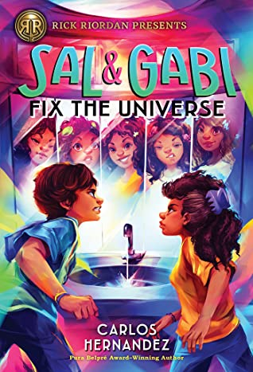
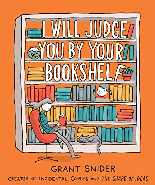
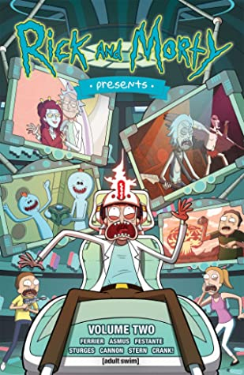

<!doctype html>
<html>
    <title>Humour</title>
    <link rel="stylesheet" href="main.css">
</html>
<body>
    <nav>
        <label class="logo">Humour</label>
        <ul class="nav-links">
            <li><a href="index.html">Home</a></li>
            <li><a href="book.html">Adventure</a></li>
            <li><a href="book1.html">Science Fiction</a></li>
            <li><a href="book2.html">Thriller</a></li>
            <li><a href="book3.html">Horror</a></li>
            <li><a href="book5.html">Mystry</a></li>
        </ul>
    </nav>
    <table cellspacing="20px">
        <tr>
            <td>
                <details>
                    <summary>Introduction</summary>
                       <p>
                        Sal and Gabi have to try to make everything right with our world when there is a rogue Gabi from another universe running loose.
                        Sal Vidon creates wormholes. But Sal's father, a calamity physicist, is trying to shut down all the wormholes Sal creates, because Papi thinks they are eroding the very fabric of our world. All of Papi's efforts are in vain, however, because a Gabi from another universe has gone rogue and is popping up all over the place, seeking revenge for the fact that her world has been destroyed. While Sal and Gabi work together to keep both Papi and Rogue Gabi under control, they also have to solve the mystery of Yasmany, who has gone missing from school. Could it have something to do with the wormhole in the back of his locker? 
                        </p>     
                    
                </details></td>
            
            <td class="a">
                <h3>Sal and gabi fix the universe</h3>
                <p>Carlos Hernandez</p>
                <a class="btn1" href="order.html">Purchase</a>
            </td>
        </tr>
        <tr>
            <td>
                <details>
                    <summary>Introduction</summary>
                      <p>
                        Matt Bors makes the bold declaration that We Should Improve Society Somewhat in this collection of comics from The Nib's Editor and Publisher, Matt Bors. Bors has been working as a cartoonist for more than a decade, and this new collection captures a mix of his timely strips based on today's incredibly politically-divided environment, along with a curated selection of his timelessly funny earlier strips.

There's never been a better time to get off Twitter and pick up a book! (Seriously, someone please tell him to get off Twitter and read a book). 
</p>     
                    
                </details></td>
            <td class="a">
                <h3>We Should Improve Society Somewhat: A Collection of Comics by Matt Bors</h3>
                <p>Matt Bors</p>
                <a class="btn1" href="order.html">Purchase</a>
            </td>
        </tr>

        <tr>
            <td><details>
                <summary>Introduction</summary>
                  <p>It’s no secret, but we are judged by our bookshelves. We learn to read at an early age, and as we grow older we shed our beloved books for new ones. But some of us surround ourselves with books. We collect them, decorate with them, are inspired by them, and treat our books as sacred objects. In this lighthearted collection of one- and two-page comics, writer-artist Grant Snider explores bookishness in all its forms, and the love of writing and reading, building on the beloved literary comics featured on his website, Incidental Comics. With a striking package including a die-cut cover, I Will Judge You By Your Bookshelf is the perfect gift for bookworms of all ages.

                  </p>
            </details></td>
            <td class="a">
                <h3>I Will Judge You by Your Bookshelf</h3>
                <p> Grant Snider </p>
                <a class="btn1" href="order.html">Purchase</a>
            </td>
        </tr>

        <tr>
            <td>
                <details>
                    <summary>Introduction</summary>
                      <p>
                        Perfect for die-hard fans, Rick and Morty Presents: Volume 2 explores the lives of four more characters from the hit [adult swim] TV show! 

                        Learn even more of the secret stories and hidden pasts of your favorite Rick and Morty(TM) characters. A frightful tale about everyone's favorite(ital) character: Jerry! What happens when you ask Mr. Meeseeks to discovery the meaning of life? Nothing good! Plus: the "behind the music" style secrets of The Flesh Curtains, Rick's band! And don't miss a story centered on Unity, Rick's favorite ex-girlfriend. Why does she need him to take over the Galaxy? You'll have to read to find out!
                    </p>
</details></td>
            <td class="a">
                <h3>Rick and Morty Presents Vol. 2</h3>
                <p>C.J. Cannon</p>
                <a class="btn1" href="order.html">Purchase</a>
                
            </td>
        </tr>
    </table>
</body>